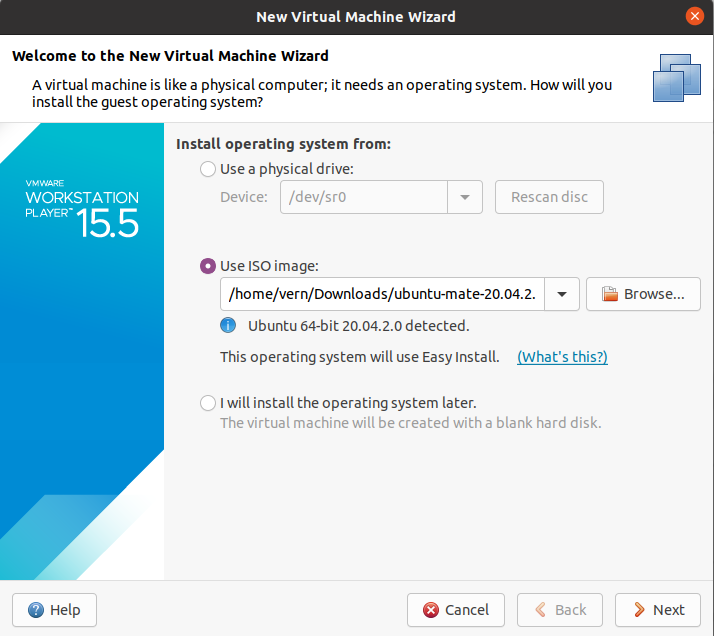
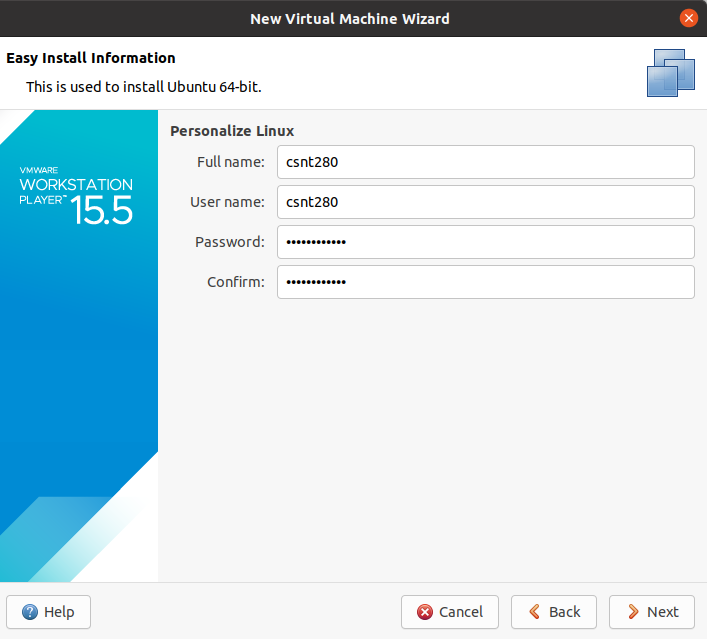
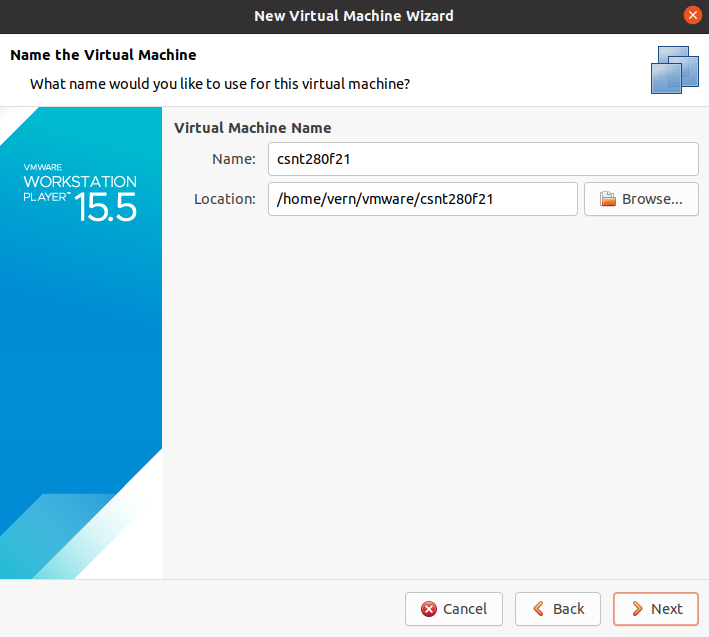
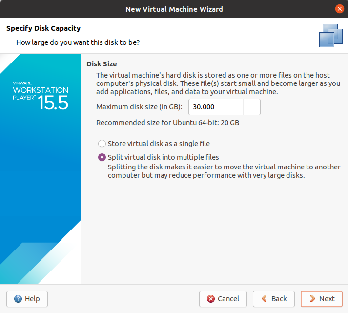
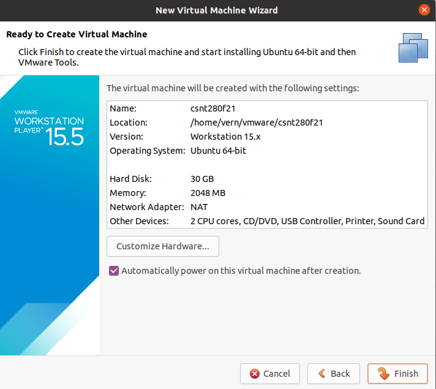

Virtual Machine for the course
CSNT280 will make use of PostgreSQL, MongoDB, Apache, PHP, Python, JavaScript, Java, Node.js and various text editors. It would be a challenge to get these installed and configured on a computer running Windows or Mac OS. The most straightforward way is to use a Virtual Machine running UbuntuMate 20.04.
There are a number of things that can complicate running virtual machine (VM) software. On the Mac side, VirtualBox and VMware don't have solutions for Macs with the new M1 (ARM-based) chip as of this time (August 2021). VMware may provide a solution at some point with their VMware Fusion Player. But for the time being, if you have such a Mac, you won't be able to run the virtual machine setup that we will use. If you are running Windows 10 and you have Hyper-V enabled (some of your CSNT courses may require this), you won't be able to use VirtualBox (the VM will run slowly if at all). The VMware Workstation Player will work for Windows 10 (even if Hyper-V is enabled), and also for Linux. So, that is what we will base our VM on for this course.
Installing VMware Workstation Player
Here is a link to the VMware download product page. Select the version (Windows versus Linux) for your computer and click on the DOWNLOAD NOW link. You may need to set up a free VMware account to download the software. Once downloaded, you can use the default settings. On Linux, if you get a dialog box asking if you want to install the Open VM Tools, make sure that you do so.
Option 1 - Using the provided image
A VMware image using UbuntuMate 20.04 has already been created. Here is the link to the folder containing the image files: csnt280sp22 image . This is around 13 GB of files, so it will take awhile to download. Also, you must use your hawaii.edu account to download them as these files are shared only with University of Hawaii google accounts. You need to download the .vmdk and .vmx files.
Option 2 - Installing from scratch
If you prefer to create the VM from scratch, start by getting the UbuntuMate 20.04.3 image at this site and choose the 20.04.3 LTS image. If you can use BitTorrent, it is much faster to download.
Start up your VMware Workstation Player. Select Home if this is not already selected. Then, choose Create a New Virtual Machine . A wizard will pop up. Select Use ISO image and browse for the ubuntu-mate-20.04.2 iso file you downloaded earlier. Click Next.

Enter csnt280 for the Full name and User name. Set an appropriate password. You must remember this password, because the instructor for the course will not know it.

Click Next. For the virtual machine name, enter "csnt280f21". You should take note of the location of the image folder and change if you want to use a different location.

Click Next. Set the maximum disk size to 30 GB. If you are going to move the image to another computer at some point, choose the option Split virtual disk into multiple files .

Click Next. Click on the Customize Hardware button if you need to change the amount of RAM or number of CPU cores. The following screen shot shows that I have selected 2 GB of RAM and left the number of CPU cores as 2.

Click Finish and wait for the image to complete installing. If you see a dialog box that asks you to install the Open VM Tools, make sure that you install them.
Configuration and Additional Installs
When the VM first boots up, make it so you choose Do not send telemetry . Then, uncheck the Open Welcome when I log on checkbox and click Close.
Install gedit and change repositories
sudo apt install geditStart up gedit once and exit. This will make it so that the gedit history is not owned by root. Then, start up gedit again, but using sudo:
sudo gedit /etc/apt/sources.listWithing gedit, type CTRL-H (to bring up find and replace). Then do the following:
Find: us.archive.ubuntu.com
Replace with: mirror.ancl.hawaii.edu/linuxClick on Replace All . You should see 14 occurrences have been replaced. Next, do the following replacement:
Find: security.ubuntu.com
Replace with: mirror.ancl.hawaii.edu/linuxClick on Replace All again. You should see that 6 occurrences have been replaced. Type CTRL-S (to save), then CTRL-Q (to quit). Next, update the repositories:
sudo apt updateWhen this completes, upgrade all the installed software:
sudo apt upgradeInstall additional packages
sudo apt install geany
sudo apt install openjdk-11-jdk
sudo apt install chromium-browser
sudo apt install browser-plugin-freshplayer-pepperflash
sudo apt install python3-psycopg2
sudo snap install brackets --classic
sudo apt install python3-tkInstalling Node and NPM
sudo apt install curl
curl -o- https://raw.githubusercontent.com/nvm-sh/nvm/v0.34.0/install.sh | bash
source ~/.bashrcDetermine latest LTS version of Node
nvm ls-remoteThis version was 16.13.1 on January 9, 2022. Install the latest version.
nvm install 16.13.1Test to see that node and npm are installed:
node -v
npm -vThese should show 14.17.5 for node and 6.14.14 for npm or later.
Install Docker
curl -fsSL https://download.docker.com/linux/ubuntu/gpg | sudo apt-key add -
sudo add-apt-repository "deb [arch=amd64] https://download.docker.com/linux/ubuntu $(lsb_release -cs) stable"
sudo apt update
sudo apt install docker-ceUse the following command to add the csnt280 user to the docker group.
sudo usermod -aG docker csnt280Logout and log back in. Run this command:
docker image lsIf there are no errors, docker is ready to go.
Install docker-compose
sudo curl -L https://github.com/docker/compose/releases/download/1.29.2/docker-compose-`uname -s`-`uname -m` -o /usr/local/bin/docker-composeCreate a file to launch docker-compose
sudo chmod +x /usr/local/bin/docker-composeCheck by running
docker-compose --versionIf the version is 1.29.2, then docker-compose is working
Install http-server
npm install -g http-serverGetting Docker files for CSNT280
Although we will make some additional Docker containers during the semester, the main Docker container setup involves going to the Laulima site for the course. Go to Laulima => Resources => docker_files and download sp2022.zip
Unzip this folder to your Desktop. Open a terminal inside the folder sp2022 . From this terminal, run the following command:
docker-compose up -dYou will see a number of files downloading and a long set up process. Eventually, you should see something like this:
<lines above omitted to save space>
Successfully built 44ee7b2d643c
Successfully tagged docker_csnt280_linux_php-apache:latest
WARNING: Image for service php-apache was built because it did not already exist. To rebuild this image you must use `docker-compose build` or `docker-compose up --build`.
Creating docker_csnt280_linux_postgresql_1 ... done
Creating docker_csnt280_linux_php-apache_1 ... doneTo check that the Docker containers are running, do the following. Note that the id numbers will be different.
$ docker container ls
CONTAINER ID IMAGE COMMAND CREATED STATUS PORTS NAMES
77724c9208d9 docker_csnt280_linux_php-apache "docker-php-entrypoi…" About a minute ago Up About a minute 0.0.0.0:8080->80/tcp docker_csnt280_linux_php-apache_1
a7d7a89db86b docker_csnt280_linux_postgresql "docker-entrypoint.s…" About a minute ago Up About a minute docker_csnt280_linux_postgresql_1To stop the Docker containers run:
docker-compose stopTo start the Docker containers up again run:
docker-compose startFixing postgresql configuration
Enter the postgresql container by opening a terminal inside the folder ~/Desktop/docker_csnt280_linux and run the following command:
docker-compose exec postgresql bashThis should take you to a root prompt inside the postgresql container. From the root prompt, change into the directory that contains the postgresql configuration files:
cd /var/lib/postgresql/dataThen, use nano to edit the file, "pg_hba.conf":
nano pg_hba.confScroll down to about line 82 or so. Make the following changes:
# TYPE DATABASE USER ADDRESS METHOD
# "local" is for Unix domain socket connections only
#local all all trust
local all all md5
# IPv4 local connections:
host all all 127.0.0.1/32 trustThe line numbers are not correct (line 1 here is actually line 81 in the file). But, using the line numbers shown here, the changes are on line 4 and line 5. Line 4 comments out the old configuration line. Line 5 shows the new line that we want to use. Hit CTRL-O and hit <enter> to save the file. Then, hit CTRL-X to exit nano.
Exit the root prompt by hitting CTRL-D or typing exit . You will need to stop and then restart the Docker containers:
$ docker-compose stop
$ docker-compose startTo check if your configuration works, go back inside the postgresql container. Run the following command to do this:
docker-compose exec postgresql bashFrom the root prompt, try to run psql to enter the database named bobdb that is owned by the user bob :
# psql -U bob -W bobdbWhen you are prompted for the password, just hit <enter>. You should get an error message:
psql: fe_sendauth: no password suppliedHit an up arrow , and this time enter the correct password "somepass" (without the quotes). You should get in this time and see the following prompt:
bobdb=> Type CTRL-D to quit psql . Hit CTRL-D again to exit the root prompt. Finally, type:
docker-compose stopto stop the Docker containers.